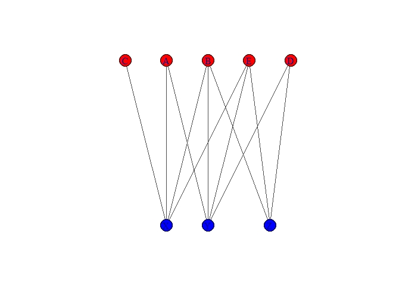
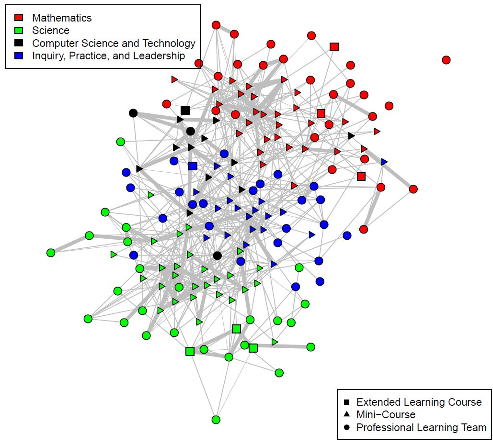

![]()
Note - this post was done before my work at EL Education, where Quarto and R are utilized not just for analysis, but for communication as well. Future posts will center code blocks and be easier for others to work with.
Problem: Do STEM teachers across disciplines within a fellowship program get the opportunity to meet through the courses they take?
This problem is incredibly important for the organization, as a part of their mission is to build a community of practice among their teachers. If science teachers and mathematics teachers don’t have a way to interact, then there isn’t a way for information to flow among the community through the courses they are in together.
Data:
The data provided to explore this problem was course enrollment data, specifically looking at the enrollment within courses with multiple workshops over the course of a semester.
Solution
Course enrollment data are what is known as bipartite data - that is, the data can be divided into two independent sets. It is typically graphed as a bipartite graph.
Let’s use the following sample table and its associated graph
| Group 1 | Group 2 |
|---|---|
| X | A |
| X | B |
| X | C |
| X | E |
| Y | A |
| Y | B |
| Y | D |
| Y | E |
| Z | B |
| Z | D |
| Z | E |

While this type of graph is useful at a glance to notice connections, what we are interested in is co-enrollments; that is, who is in a course with whom, and in particular, whether there are courses that act as bridges among mathematics and science teachers.
We can do this with a little bit of matrix algebra. If you multiply an incidence matrix by its transpose, then you convert a two-mode matrix into a one mode incidence matrix. R is particularly suitable for converting incidence matrices into an igraph object, which you can plot and even pull interesting centrality measures from.
In matrix multiplication, order matters! Depending upon whether you multiply the transpose first or second, you would get the following adjacency matrices.
| X | Y | Z | |
|---|---|---|---|
| X | 0 | 3 | 2 |
| Y | 3 | 0 | 3 |
| Z | 2 | 3 | 0 |
in one form, or alternatively,
| A | B | C | D | E | |
|---|---|---|---|---|---|
| A | 0 | 2 | 1 | 1 | 2 |
| B | 2 | 0 | 1 | 2 | 3 |
| C | 1 | 1 | 0 | 0 | 1 |
| D | 1 | 2 | 0 | 0 | 2 |
| E | 2 | 3 | 1 | 2 | 0 |
These matrices tell you how many shared destinations there are. For instance, A and C share one common destination (X).
For our course enrollment data, this is perfect; we can now create a matrix and plot igraph objects in two different perspectives:
- A graph of teachers where every edge represents courses that they took together
- A graph of courses where every edge represents teachers that were co-enrolled in these courses
For this particular post, let’s look at the graph of courses.
Graph, and Observations
Within the fellowship program, courses are generally organized by two principles:
- Content (Math, Science, CS, and Inquiry)
- Type (Professional Learning Teams, Mini-Courses and Extended Length Courses)
You can see some really interesting things that come up in the graph, done using the igraph package and the Fruchterman-Reingold layout, which attempts to organize the data with greater centrality nodes at the center:

There are a few things that I noticed in this graph:
- The “Inquiry, Practice and Leadership” and CS courses serve as a sort of mixing ground; that is, they have people in them who are co-enrolled in mathematics and science courses. They seem to be a necessary part of a course catalog that encourages mingling, and it would be interesting to look at the comparative audiences.
- Mini-Courses are more central than Professional Learning Teams. This makes sense; they usually enroll more teachers, so there are more opportunities for co-enrollments with other classes. However, they seem to serve magnified importance in allowing teachers to see others.
- A fun next step would be to use R’s
snapackage in order to find the betweenness of the Nodes. Betweenness is a measure of how well a node acts as a bridge between neighborhoods, and it would be interesting to see which courses act as the bridges on the graph between pure mathematics and pure science courses.
As you can see, this method allows you to take something that is not naturally a network graph (bipartite data) and start to think about it using a network mindset.
This is enough to start to answer the question above. We’ll use the space below to walk through the code so you can do something similar with bipartite data that you have!
Walking through the Code
We’ll be using graphs from the tidyverse package, as well as Matrix in order to allow matrix multiplication.
library(igraph)
library(ggraph)
library(Matrix)You’ll need to load up three different data sets:
- Your main dataset. For the code below, we will call this
Data - A dataset that has extra information about your first column of interest A, which we’ll call
NodeA - A data set that has extra information about your second columd of interest B, which we’ll call
NodeB
The next thing you’ll need to do is convert Data into an incidence matrix, which means that every enrollment will become a 1 at the intersection of the rows (which will be column A) and columns (which will be column B).
Incidence <-spMatrix(nrow=length(unique(Data$A)),
ncol=length(unique(Data$B)),
i=as.numeric(factor(Data$A)),
j=as.numeric(factor(Data$B)),x=rep(1,length(as.numeric(Data$A))))The incidence matrix is now ready to be converted into an adjacency matrix. Depending upon whether you are interested in the first column or second column, it will define the order in which you do the matrix multiplication. In this case, we are interested in the adjacency matrix for the first column. Note that we signify the multiplication using %*%
AdjacencyA <- Incidence %*% t(Incidence)Now we can create an igraph object. However, we will then decompose it to an edge list, so that we can recreate the igraph object, adding back in the weights and involving the background data for the nodes that we wish. If you just wish to graph this with no information on the nodes, you can skip a few steps here. I’m naming my igraph object teachers.
edgeA <- graph.adjacency(AdjacencyA, mode="undirected", weighted=TRUE, diag=FALSE)
##this is where you lose weight
edgeA2 <- as_data_frame(get.edgelist(edgeA))
##need to get it back and form the new igraph object with my nodes
teachers <- graph_from_data_frame(edgeA2, vertices=nodesA, directed=FALSE)
teachers <- set_edge_attr(teachers, "weight", value=E(edgeA)$weight)Now you have an igraph object ready to graph. In the graph above, V(teachers)$shape was defined by the type of course, and V(teachers)$color was set to the content of the course. E(teachers)$weight was also multiplied, so that larger co-enrollments stuck out.
To learn more
The following links helped me think through this problem:
- Network Visualization in R by Katya Ognyanova
- Working with Bipartite/Affiliation Network Data in R by Sol Messing
Citation
@online{russell2022,
author = {Russell, John},
title = {A Bipartite Case (Part 1)},
date = {2022-02-17},
url = {https://drjohnrussell.github.io/posts/2022-02-17-bipartite-case-i/},
langid = {en}
}